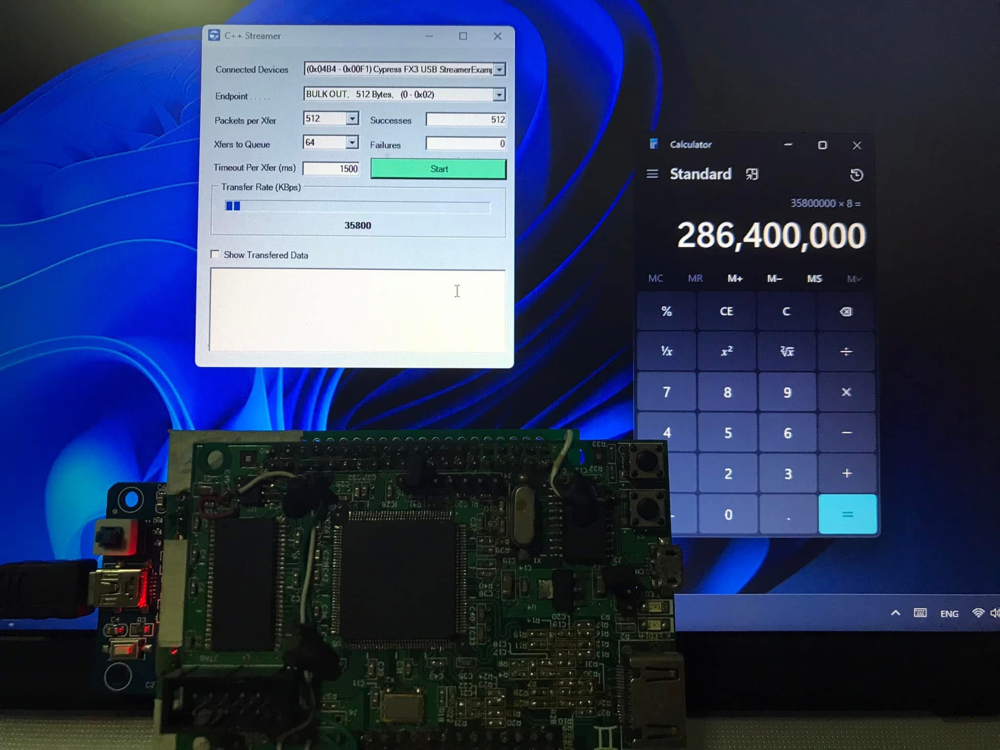

Using EZUSB (CY7C68013) to Interface with FPGA
Overview
This article explains the connection between a computer and an FPGA using the EZUSB FX2LP (CY7C68013A) chip, which acts as a bridge translating the USB protocol into a parallel bus (Slave FIFO) that the FPGA can easily communicate with.
The overall architecture of this example project is as follows:
- Windows PC: Responsible for sending and receiving data over USB, using programs such as Python, C#, or test applications like Cypress Streamer.
- FX2LP (CY7C68013A): Functions as the USB device controller, translating USB data to a parallel data bus in Slave FIFO mode.
- FPGA: Responsible for reading data from the FX2LP and writing data back. In this example, it performs a Loopback, meaning it reads the received data and immediately sends it back.
USB Endpoint Configuration
The most critical part of operating in Slave FIFO mode is configuring the endpoints and flags inside the FX2LP correctly, enabling the FPGA to monitor the status of the FIFO (First-In, First-Out) buffers.
In this example, we configure the endpoints as follows:
EP2: An OUT Endpoint of size 512 bytes, 4x buffered, used to receive data from the PC (PC -> Device).FLAGAis configured as the Empty Flag of EP2. This meansFLAGAwill be Active ('1') when EP2 has data available for the FPGA to read.
EP6: An IN Endpoint of size 512 bytes, 4x buffered, used to send data back to the PC (Device -> PC).FLAGDis configured as the Full Flag of EP6. This meansFLAGDwill be Active ('1') when EP6 is not full and is ready for the FPGA to write data into.
Development Steps
1. Compile FX2LP (CY7C68013) Firmware
The most important part of the firmware is configuring the registers inside the TD_Init() function in slave.c to define the operations of the Slave FIFO interface, endpoints, and flags according to our design.
You can use Keil C51 IDE (the trial version is sufficient since the code is small) to compile slave.c into a .hex file for downloading onto the FX2LP.
Key Code Section in slave.c
// slave.c
void TD_Init( void )
{
// ตั้งค่า Clock ของ CPU และเปิดการใช้งาน CLKOUT
CPUCS = 0x12; // CLKSPD[1:0]=10, for 48MHz operation, output CLKOUT
// ตั้งค่า FLAG A ให้เป็น Empty flag ของ EP2 (EP2EF)
// Active High หมายถึงเมื่อมีข้อมูลใน EP2, FLAGA จะเป็น High
PINFLAGSAB = 0x08; // FLAGA - EP2EF
SYNCDELAY;
// ตั้งค่า FLAG D ให้เป็น Full flag ของ EP6 (EP6FF)
// Active High หมายถึงเมื่อ EP6 ยังไม่เต็ม, FLAGD จะเป็น High
PINFLAGSCD = 0xE0; // FLAGD - EP6FF
SYNCDELAY;
PORTACFG = 0x80; // เปิดใช้งาน FLAGD
SYNCDELAY;
// ตั้งค่า Interface เป็น Slave FIFO mode และรับ Clock จากภายนอก (FPGA)
IFCONFIG = 0x03; // external clock input, Slave FIFO interface
SYNCDELAY;
// --- Endpoint Configuration ---
// EP2: OUT, 512 bytes, bulk, 4x buffered
EP2CFG = 0xA0;
SYNCDELAY;
// EP6: IN, 512 bytes, bulk, 4x buffered
EP6CFG = 0xE0;
SYNCDELAY;
// --- FIFO Reset ---
FIFORESET = 0x80; // Activate NAK-ALL
SYNCDELAY;
FIFORESET = 0x02; // Reset FIFO 2
SYNCDELAY;
FIFORESET = 0x06; // Reset FIFO 6
SYNCDELAY;
FIFORESET = 0x00; // Deactivate NAK-ALL
SYNCDELAY;
// --- FIFO Configuration ---
// EP2: AUTOOUT=1 (ส่งข้อมูลให้ master อัตโนมัติ), WORDWIDE=1 (16-bit)
EP2FIFOCFG = 0x11;
SYNCDELAY;
// EP6: AUTOIN=1 (รับข้อมูลจาก master อัตโนมัติ), WORDWIDE=1 (16-bit)
EP6FIFOCFG = 0x0D;
SYNCDELAY;
}
2. FPGA Design
The FPGA side is responsible for monitoring the status of FLAGA and FLAGD to read and write data with the FX2LP over the 16-bit parallel bus.
- When
FLAGAis '1', the Control Logic detects that data from the PC is available in the EP2 FIFO. It then asserts theSLRD_L(Slave Read) signal to read data and store it in the RAM. - When the FPGA needs to send data back, the Control Logic reads data from the RAM and checks
FLAGD. If it is '1' (EP6 FIFO is not full), it asserts theSLWR_L(Slave Write) signal to write data into the EP6 FIFO.
Key Code Section in PRJ_TOP.vhd
-- PRJ_TOP.vhd
-- ... (entity declaration) ...
architecture RTL of PRJ_TOP is
-- ... (signal declarations) ...
-- สัญญาณควบคุมการอ่าน/เขียน จะถูกสร้างตามสถานะของ FLAGA และ FLAGD
process( CLK_48M , RST_L )
begin
if ( RST_L = '0' ) then
wSLRD_L <= '1' ; -- Active Low, '1' = inactive
wSLOE_L <= '1' ; -- Active Low, '1' = inactive
wSLWR_L <= '1' ; -- Active Low, '1' = inactive
elsif ( CLK_48M'event and CLK_48M = '1' ) then
if(wFLAGA = '1')then -- ถ้า FLAGA Active (มีข้อมูลให้อ่าน)
wSLRD_L <= '0' ; -- ทำการ Read
wSLOE_L <= '0' ; -- เปิด Output Enable
wSLWR_L <= '1' ;
elsif(wFLAGD = '1')then -- ถ้า FLAGD Active (เขียนข้อมูลได้)
wSLRD_L <= '1' ;
wSLOE_L <= '1' ;
wSLWR_L <= '0' ; -- ทำการ Write
else
if(wFLAGA = '0' and wFLAGD = '0')then
wSLRD_L <= '1' ;
wSLOE_L <= '1' ;
wSLWR_L <= '1' ;
end if;
end if;
end if;
end process;
-->> EP2 : PC->device (Logic การอ่านข้อมูลจาก FX2LP)
process( CLK_48M , RST_L )
begin
if ( RST_L = '0' ) then
wPC2DevReq <= '0' ;
elsif ( CLK_48M'event and CLK_48M = '1' ) then
if(wFLAGA = '1')then -- เริ่ม Request เมื่อ FLAGA Active
wPC2DevReq <= '1' ;
else
if(wSLRD_L = '1')then -- หยุด Request เมื่อการอ่านสิ้นสุด
wPC2DevReq <= '0' ;
end if;
end if;
end if;
end process;
-- เขียนข้อมูลที่อ่านได้จาก FD bus ลง RAM
wWr <= wPC2DevReq ; -- Write Enable
wWrData <= wFD ; -- Data to Write
-->> EP6 : device->PC (Logic การเขียนข้อมูลไปยัง FX2LP)
process( CLK_48M , RST_L )
begin
if ( RST_L = '0' ) then
wDev2PCReq <= '0' ;
elsif ( CLK_48M'event and CLK_48M = '1' ) then
if(wFLAGD = '1')then -- เริ่ม Request เมื่อ FLAGD Active
wDev2PCReq <= '1' ;
else
if(wSLWR_L = '1')then -- หยุด Request เมื่อการเขียนสิ้นสุด
wDev2PCReq <= '0' ;
end if;
end if;
end if;
end process;
-- นำข้อมูลจาก RAM (wRdData) ไปเขียนลง FD bus เมื่อ wSLWR_L Active
FD <= wRdData when (wSLWR_L = '0') else (others => 'Z') ;
-- เลือก Endpoint Address ตาม Flag ที่ Active
process( CLK_48M , RST_L )
begin
if ( RST_L = '0' ) then
ADR1 <= '0' ;
ADR0 <= '0' ;
elsif ( CLK_48M'event and CLK_48M = '1' ) then
if (FLAGA = '1')then -- FLAGA active, select EP2
ADR1 <= '0' ;
ADR0 <= '0' ;
elsif(FLAGD = '1')then -- FLAGD active, select EP6
ADR1 <= '1' ;
ADR0 <= '0' ;
end if;
end if;
end process;
end RTL;
3. Test with Cypress Software
After downloading the firmware into the FX2LP and programming the FPGA, you can use the Streamer.exe utility (included with the EZ-USB FX3 SDK) to test data transmission. The utility displays the data sent (OUT transfers) and the data received (IN transfers). If everything functions correctly, the received data should match the sent data (Loopback).
Test Results



Note
All example code can be downloaded at:
https://github.com/wichayen/ezusb_experimental